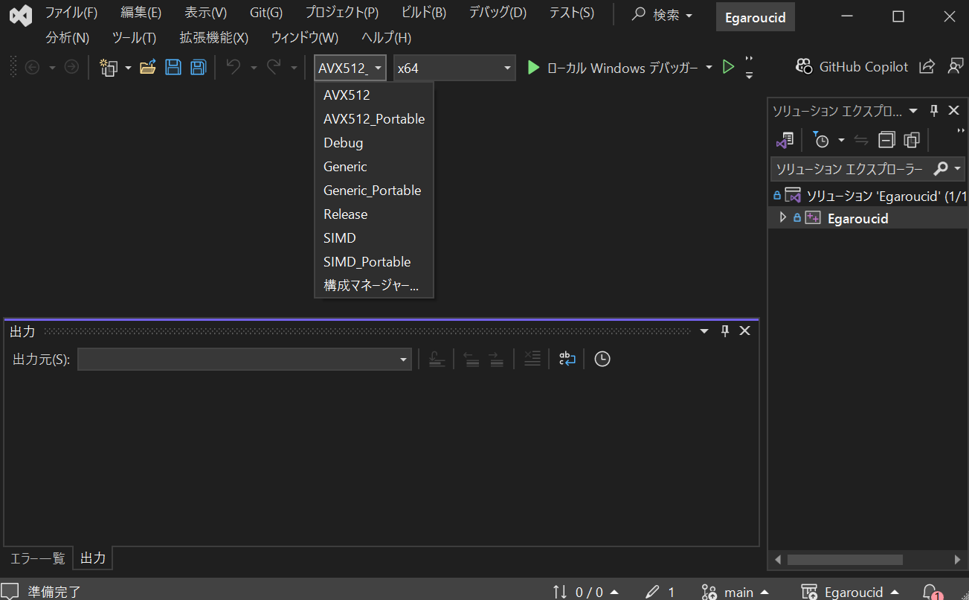
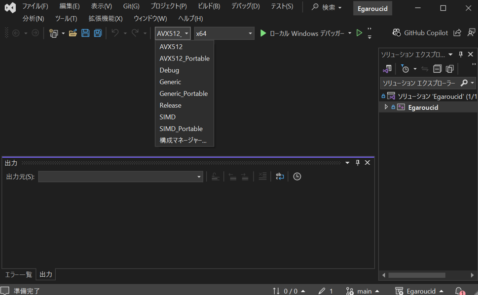

Egaroucid Download
There are Install version and Portable version. With Install version, you should just download the installer and execute it to install. Installer automatically selects the optimal revision for your environment. With Portable version, you should download a zip file and unzip it.
Install Version
Please download an installer from this button. Then run the installer and install it!
 Download Egaroucid 7.7.0
Download Egaroucid 7.7.0
If you see "Windows protected your PC" popup, then you can run it with clicking "More info", then "Run anyway". Egaroucid has no malicious codes, but please do this operation at your own risk. The images are examples in Japanese.


Egaroucid GUI version is for only Windows 64 bit on CPUs made by Intel or AMD. Also, you can use Egaroucid with x64 compatible ARM CPU.
Egaroucid has some revisions (SIMD / Generic / AVX512) to optimize the speed for several environments. Installer automatically select the best revision for you.
Please visit GitHub Releases to see older versions and release notes.
Portable Version
Egaroucid GUI version is for only Windows 64 bit on CPUs made by Intel or AMD. Also, you can use Egaroucid with x64 compatible ARM CPU.
Please download the one which is suitable to your environment, and unzip it. Egaroucid_[version].exe is the executable of Egaroucid.
| OS | Requirements | Date | Portable version zip |
|---|---|---|---|
| Windows | AVX2 (Standard) | 2025/08/16 | Egaroucid 7.7.0 SIMD Portable |
| Windows | - | 2025/08/16 | Egaroucid 7.7.0 Generic Portable |
| Windows | AVX-512 | 2025/08/16 | Egaroucid 7.7.0 AVX512 Portable |
Egaroucid is optimized to SIMD version, which requires AVX2 instructions, but old CPUs (created in 2013 or older) might not be able to run it. If so, please install Generic version. If you have a CPU that have AVX-512 extensions, AVX512 edition may be faster.
Please visit GitHub Releases to see older versions and release notes.
About Changing Book Format
to egbk3 Format
Book format is changed in Egaroucid 6.5.1 to .egbk3 extension. If you used older version and install 6.5.1, Egaroucid automatically convert book format in first execution. Also, you can use old .egbk2 and .egbk book in "Book Import" function.
to egbk2 Format
Book format is changed in Egaroucid 6.3.0. The new book's filename extension is .egbk2. If you used version 6.2.0 or older and install 6.3.0, Egaroucid automatically convert book format in first execution. Also, you can use old .egbk book in "Book Reference" and "Book merge", but the save format is only new .egbk2.
Build by Yourself
Egaroucid can be built by yourself. You can use detailed optimization options to make it run faster on your PC, or you can modify it!
Windows
You need:
Download the source code of Egaroucid below
| Date | Download |
|---|---|
| 2025/08/16 | Egaroucid 7.7.0 source code |
Unzip the file, then double-click Egaroucid.sln, then Visual Studio opens. Press the Debug>Run Without Debugging, then you can build and run Egaroucid. You can change editions (SIMD, Generic, etc.) by changing Solution Configrations.
Egaroucid's source codes are in src/engine (for AI calculation) and src/gui (for GUI). You can modify Egaroucid by changing these codes!
 
Mac
To Be Done
Linux
To Be Done